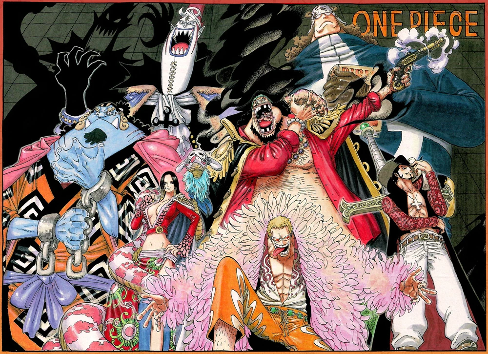

Os Shichibukai

Os Shichibukai eram sete piratas extremamente poderosos que se colocaram a serviço do Governo Mundial. O objetivo dos Shichibukai era fazer com que os piratas tivessem que lidar com outros piratas. Eles também eram um grande símbolo da força do governo. Em troca de sua aliança com o Governo Mundial, a recompensa de cada membro era congelada e eles tinham muito mais liberdade para cometer crimes
Embora trabalhassem para o Governo Mundial, os Shichibukai não se importavam nem respeitavam o Governo (embora Bartholomew Kuma mais tarde tenha sido transformado em fantoche deles), e não respeitavam nem mesmo os outros Shichibukai, e eram frequentemente considerados pelos marinheiros como nada além de piratas comuns. De outra perspectiva, eles eram vistos como "cães do governo" e desprezados por outros piratas, mas ainda eram temidos e respeitados por sua reputação infame e pela força que haviam adquirido antes e depois de se tornarem Shichibukai.
Os Shichibukai pareciam ser o equilíbrio entre a caoticidade dos Quatro Imperadores e a disciplina da Marinha. A maior parte dos Shichibukai era composta por veteranos do Novo Mundo, incluindo membros que conheceram os Quatro Imperadores ou até lutaram contra eles.
Informações Pessoais
| Informações Pessoais |
| Nome |
Idade |
| Dracule Mihawk |
43 |
| Informações Pessoais |
| Nome |
Idade |
| Bartholomew Kuma |
47 |
| Informações Pessoais |
| Nome |
Idade |
| Boa Hancock |
31 |
| Informações Pessoais |
| Nome |
Idade |
| Jinbe |
46 |
Recompensas
| nome |
recompensa |
| Dracule Mihawk |
B 3,590,000,000 |
| nome |
recompensa |
| Bartholomew Kuma |
B 296.000.000 |
| nome |
recompensa |
| Boa Hancock |
B 1,659,000,000 |
| nome |
recompensa |
| Jinbe |
B 1,100,000,000 |
Nomes dos mais temidos Corsários
| Jinbe |
Boa Hancock |
| Bartholomew Kuma |
Dracule Mihawk |
Home